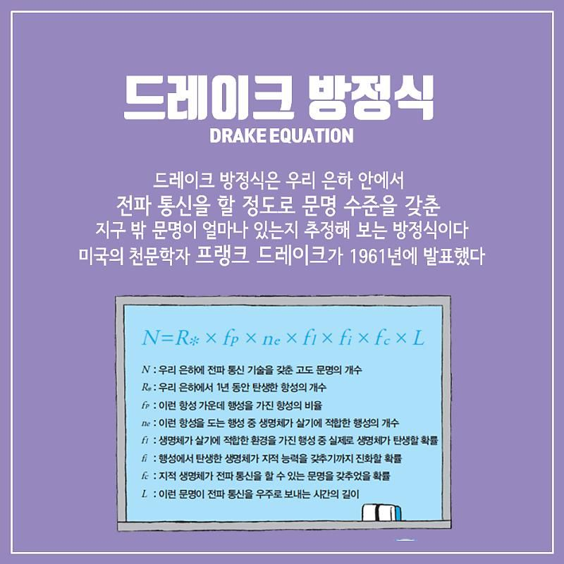

아 저기서 폴짝 뛰면 우주까지 뛰어진다고 미끄럼틀 타듯이 걸어야 한다고ㅋㅋㅋㅋㅋㅋㅋㅋㅋ 재밌는 우주 짤 잘 봤습니다. 그런데 제가 어제 우주에서 우리가 가장 고등 생물이라는 가설도 봤는데 그러면 이 가설은 의미없을 것 같습니다. 그리고 우리가 가장 고등한 거면 너무 외롭고 슬플 것 같습니다
shm0888
(글쓴이)
2022-06-18 오후 01:15:08

인간 젤나가설. 나사에서 발표한 걸 말씀하시는 것 같습니다. 나중되면 인간이 신같은 취급받을 확률이 92퍼센트라고 하던 가설. 그래도 그것도 하나의 가설이니까요. 드레이크 방정식도 있고 카르다쇼프 척도도 있고 다른 문명이 있는걸 의미하거나 우리보다 발전한 문명이 있을수도 있는걸 암시하는 척도가 있으니... 개인적으로 저도 우리보다 발달한 문명이 있었으면 좋겠습니다.

후원댓글 10개
댓글 10개 ▼